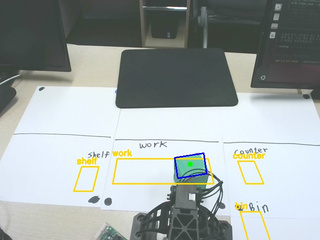
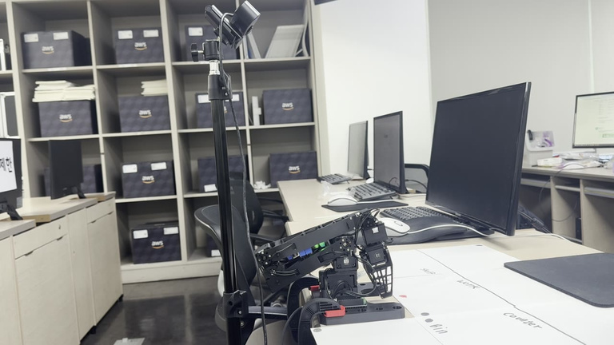
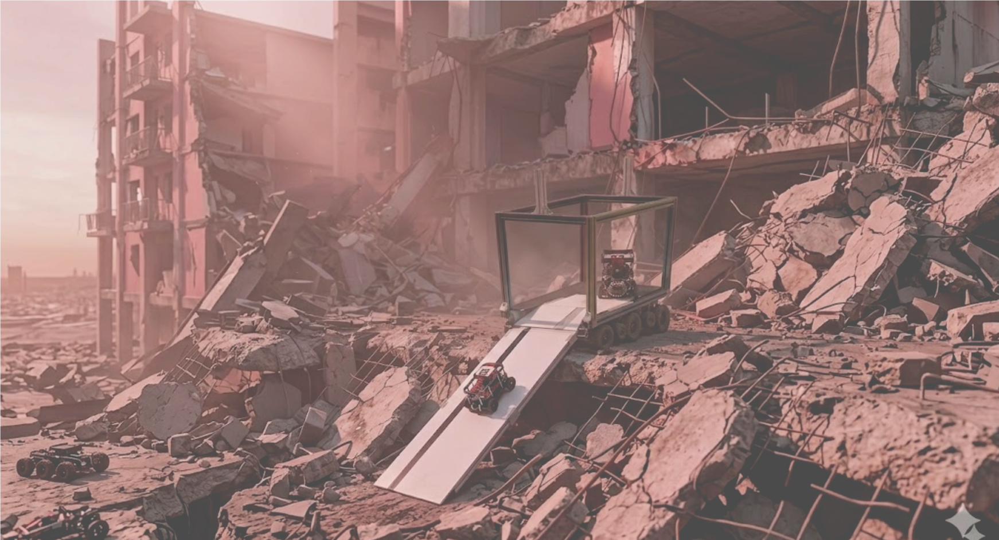

LARO-BOT · 대표 동작실물 로봇
MP4 ↗LARO-BOT
다국어 명령을 로봇 행동으로 변환하고, 실행 결과에 따라 다시 시도하거나 중단하는 ROS 2 로봇 팔 시스템.
프로젝트 자세히 보기 →PARK JUNSU · 2026
ROBOTICS SYSTEM · FULL-STACK DEVELOPMENT
PROJECT OVERVIEW
이미지의 재생 버튼을 누르면 짧은 시연을 바로 볼 수 있습니다.
다국어 명령을 로봇 행동으로 변환하고, 실행 결과에 따라 다시 시도하거나 중단하는 ROS 2 로봇 팔 시스템.
프로젝트 자세히 보기 →6대의 이기종 로봇을 위한 통합 관제 시스템. 작업을 배정하고, 로봇 간 통행을 조율하고 운영 상태를 관리합니다.
프로젝트 자세히 보기 →PROJECT 01 · 개인 프로젝트
자연어 명령으로
물체를 집고 옮기는 로봇 팔
고정 카메라와 작업면에서 지정된 물체를 조작하고, 실행 실패에 따라 재시도 범위를 제한합니다.
LARO-BOT · SYSTEM ARCHITECTURE
“빨간 블록을 선반으로 옮겨줘”
한국어 · 영어 · 일본어 등
명령을 로봇 행동으로 변환
현재 물체와 허용 행동 확인
검증을 통과한 계획만 실행
형식·인자 오류 시 사유를 담아 재요청
Pick · Place · MoveTo
관절 한계와 IK 후보를 확인하고 MoveIt 2로 경로 계획·실행
목표 위치·방향을 관절각 후보로 변환
팔꿈치 방향에 따른 두 해 계산

arm_perception
물체 위치와 작업 구역 확인
현재 인식 정보를 /scene_state로 공유

ROBOT CELL · FEEDBACK
물체의 최종 위치와 그리퍼 관절값으로 결과를 판단하고, 실패 원인에 따라 다시 시도하거나 중단
계획 → 실행 → 인지·센서 피드백 → 결과 확인Agent는 계획을 검증하고, 행동 실행 계층은 IK 계산과 MoveIt 2 실행을 연결합니다.
LARO-BOT · SIMULATION / REAL ROBOT
Gazebo · 전체 작업 흐름 확인명령 → 집기 → 이동·놓기 → 결과 확인
실물 · 집기·놓기 실행실제 물체에 접근하고 집어 옮겨 내려놓는 동작 확인
서로 다른 시점의 시연입니다. 왼쪽은 3배속, 오른쪽은 원속도이며 실행 속도를 비교하는 영상은 아닙니다.
LARO-BOT · PLAN VALIDATION
카운터의 빨간 블록을 선반으로 옮겨줘
OLLAMA · 구조화된 계획
pick(red_block) place(red_block, shelf)
초기 명령 계획 최대 2단계
60개 다국어 사례는 전체 242개 평가에 포함됩니다. 수치는 계획 생성·거부 평가이며 실물 작업 성공률과는 구분합니다.
LARO-BOT · PERCEPTION
알려진 물체의 색상 범위 사용
중심점과 긴 축 계산
Camera Info · TF · 고정 작업 평면
물체 ID · 위치 · 방향 공유
같은 물체 정보로 인지와 실행을 연결Agent는 대상을 확인하고, 행동 실행 계층은 해당 좌표를 사용합니다.
LARO-BOT · KINEMATICS / MOTION
카메라 인지 결과로 받은 좌표와 물체의 방향
팔꿈치 방향에 따른 두 가지 관절각 후보 계산
관절 한계를 확인하고 현재 자세와 가까운 후보 선택
계획한 관절 궤적을 컨트롤러로 전달
LARO-BOT · ROBOT ACTIONS
LARO-BOT · AUTONOMOUS CLEANUP
실물 시연 · work 구역의 빨간 블록을 shelf로 이동
work 구역에 머무는 물체를 정리 대상으로 선택
red_block → shelf / green_block → bin
Pick → Place → MoveTo(home)
마지막 인식 결과로 배치 여부 확인
LARO-BOT · FAILURE RECOVERY
OBJECT_NOT_FOUNDGRASP_FAILEDGRIPPER_EMPTYUNDEFINED_POSE / UNREACHABLE한 명령당 복구 시도 1회, 단계별 횟수 제한복구할 수 없는 요청이거나 정해진 횟수를 소진하면 작업을 중단합니다.
LARO-BOT · EXECUTION CHECKS
01 · 중복 실행 차단
작업 중 들어온 추가 명령
기존 작업 실행 중
새 Goal 수신 시 실행 상태 확인
진행 중인 작업은 유지
02 · 도달 불가
수행할 수 없는 목표 요청 중단
UNREACHABLE
도달할 수 없는 목표에 실패 이유 반환
03 · 미등록 자세
등록되지 않은 자세 요청 실패 처리
UNDEFINED_POSE
등록되지 않은 자세를 실행하지 않음
LARO-BOT · TROUBLESHOOTING
시뮬레이션 좌표를 실물에 적용하자 카메라 좌표와 실제 위치에 24~51mm 차이가 발생했습니다.
컨트롤러 완료만으로 판단하자 빈손도 성공으로 처리되는 문제가 발생했습니다.
이동 중 팔꿈치 해가 바뀌면서 팔이 크게 반전하고 물체가 낙하했습니다.
PROJECT 02 · 팀 프로젝트
이기종 로봇 6대를 위한
통합 관제 시스템
7인 팀 · FMS 설계·구현 담당
TurtleBot 4대, 운송 캐리어, 매니퓰레이터를 연결하는 관제 구조를 설계했습니다.
VICPINKY CARRIER · VICTIM → TASK
/victim/confirmed · 정찰 로봇이 보낸 map 좌표를 수신
좌표를 VICTIM 노드로 등록하고, 기존 경로에 연결된 가장 가까운 STATION과 엣지로 연결
새 목적지를 선택하고 구호 로봇에 작업 배정
VICPINKY CARRIER · SYSTEM ARCHITECTURE
로봇 상태 · 로봇별 작업 · 로봇 추적 · 데이터 관리
↕ 실시간 상태·명령
↕ 필요한 데이터만 중계
↕ 로봇별 DDS 도메인
DATABASE
로봇 정보 · 작업 이력 · 지도 · 노드 · 엣지 · 로그
VICPINKY CARRIER · TASK QUEUES
작업 배정과 정상 실행
단일 · 연속 · 시나리오
작업 우선순위에 따라 정렬
가용 상태와 작업량을 비교해 선정
각 로봇의 작업 실행 순서
명령 실행과 결과 확인
후속 작업 확인
오프라인, 오류(ERROR), 일시정지(PAUSED) 상태는 제외
완료된 단계와 현재 수행 작업을 같은 화면에서 확인전체 큐에서 작업을 배정하고, 로봇별 큐에서 다음 작업을 이어갑니다.
VICPINKY CARRIER · TASK REASSIGNMENT
수행 중인 단일 작업의 오류 처리
실패 이력 보존
자동 배정 ON일 때 가용 후보에 재배정
이동·구호 작업을 다른 로봇이 수행
자동 배정 실행 시 작업 순서
VICPINKY CARRIER · TRAFFIC CONTROL
착수 시각이 없으면 생성 시각을 사용합니다.
다음 노드의 점유 상태와 다른 로봇의 목표를 비교
구호(PROCESS) > 이동(MOVE) > 충전(CHARGE)
tb3_01은 N04에서 완료. tb3_02는 N03 → N05로 이동을 이어감
경로 생성 · DIJKSTRA
경로 주행 · 다음 노드 조회
VICPINKY CARRIER · AUTO CHARGING
자동 충전 ON · 실행 순서
충전 필요 상태로 전환
현재 실행 중인 작업과 대기 작업이 모두 0건이면 진행
빈 충전소가 없으면 지정된 장소에서 대기
충전소를 비우고 지정된 장소에서 대기
VICPINKY CARRIER · TROUBLESHOOTING
/tf중계 제외 예시/amcl_pose위치 상태/odom주행 추정고빈도 TF까지 중계하며 상태 수신이 불규칙해졌습니다.
/odom/tb3_01/odom/odom/tb3_02/odom여러 로봇이 같은 토픽명을 사용해 상태와 명령을 구분할 필요가 있었습니다.
여러 로봇의 이동을 관리하려면 위치와 경로 진행을 비교할 공통 기준이 필요했습니다.
22 / 22


박준수